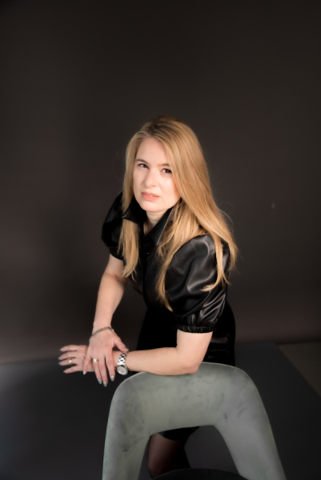

כשמדובר בהחלטות שמשנות חיים – לא מתפשרים על הייצוג המשפטי
יש מצבים שבהם הדרך שבה תנהלו את ההליך המשפטי תשפיע לא רק על התוצאה המיידית, אלא על החיים שלכם לשנים קדימה. בדיוק במקרים כאלה, הבחירה בעורך הדין הנכון היא לא רק שאלה מקצועית – אלא החלטה אסטרטגית.
עו״ד אריאלה רוזנטל-סודרי מלווה לקוחות כבר למעלה מ־25 שנה, עם ניסיון בתיקים מורכבים במיוחד בתחומי דיני המשפחה, חטיפת ילדים, צוואות וירושות. הגישה המשפטית שלה מבוססת על הבנה עמוקה של הסיטואציה, חשיבה מדויקת וניהול נכון של כל שלב בתהליך.
נחשבת לאחת הדמויות המקצועיות הבולטות בישראל בתחום דיני המשפחה.
שיחה עם המשרד

ניסיון שמוביל את התהליך – לא מגיב אליו
המשרד פועל משנת 2000 ומעניק ייעוץ וייצוג משפטי במצבים שבהם כל החלטה יכולה להיות משמעותית. לא מדובר רק בניהול תיק משפטי, אלא בליווי של תהליך אישי, מורכב ולעיתים גם רגיש מאוד.
העבודה במשרד מבוססת על בניית אסטרטגיה מדויקת לכל תיק, תוך התייחסות לכל פרט – משפטי ואנושי כאחד. המטרה היא לא רק להגיע לתוצאה, אלא לעשות זאת בצורה נכונה, שקולה ובטוחה.
בנוסף לפעילות המשפטית, המשרד מעניק גם ליווי בהוצאת דרכון ואזרחות גרמנית – תחום הדורש הבנה משפטית בינלאומית וניסיון מוכח.
תחומי עיסוק מרכזיים
המשרד עוסק במספר תחומים משפטיים מרכזיים, כאשר המכנה המשותף ביניהם הוא רמת מורכבות גבוהה והצורך בליווי מקצועי מדויק.
גירושין ודיני משפחה
הליכי גירושין אינם רק הליך משפטי – הם תהליך שמשפיע על כל תחומי החיים. ליווי נכון יכול לעשות את ההבדל בין תהליך מסודר לבין מצב של חוסר ודאות.
המשרד מטפל במגוון סוגיות, כולל משמורת, מזונות וחלוקת רכוש, תוך התאמה מלאה לכל מקרה.
צוואות וירושות
עריכת צוואה בצורה נכונה היא הדרך להבטיח שהרצון שלכם יתממש בצורה מדויקת. הטיפול המשפטי בתחום זה דורש דיוק, בהירות וחשיבה קדימה.
המשרד מלווה בעריכת צוואות, טיפול בצווי ירושה וניהול תהליכים מורכבים בתחום זה.
חטיפת ילדים – תחום שלא סובל טעויות
כאשר מדובר בחטיפת ילדים, כל טעות עלולה להיות קריטית. מדובר בתחום משפטי מורכב במיוחד, לעיתים גם ברמה הבינלאומית, שבו יש לפעול במהירות ובדיוק.
עו״ד אריאלה רוזנטל-סודרי מביאה ניסיון רב בטיפול בתיקים מסוג זה, כולל התמודדות עם הליכים לפי אמנת האג.
זהו תחום שבו הניסיון והיכולת להבין את התמונה המלאה הם אלו שעושים את ההבדל.
שירותי נוטריון בחיפה
המשרד מספק שירותי נוטריון מלאים, לרבות אימות חתימה, תרגומים נוטריוניים ואישור מסמכים.
במידה ואתם זקוקים לשירות נוטריוני, ניתן לקרוא מידע נוסף בעמוד נוטריון בחיפה .
השירות ניתן במגוון שפות: עברית, אנגלית, גרמנית, צרפתית, ספרדית ואיטלקית.
צריכים ייעוץ משפטי?
שיחה אחת יכולה לעשות סדר ולהבהיר מה הצעד הנכון עבורכם.